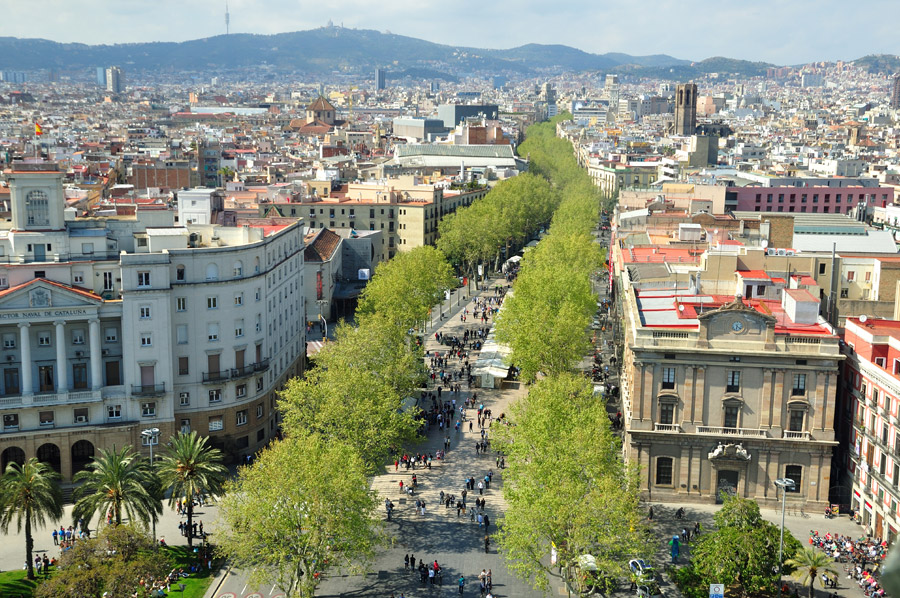
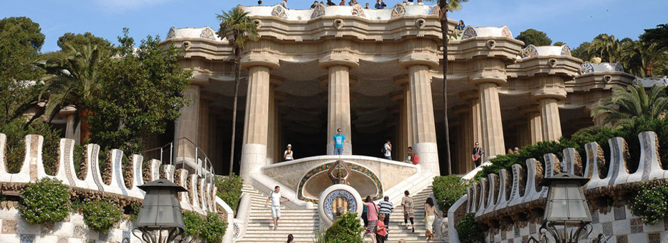

Barcelona
Introducción
Lugares destacados
- Las Ramblas
- Parque Güell
- Sagrada Familia
Datos
Barcelona Se ubica a orillas del mar Mediterráneo, a unos 120 km al sur de la cadena montañosa de los Pirineos y de la frontera con Francia. Con una población de 1 600 500 habitantes , es la segunda ciudad más poblada de España.
Historia
Según una leyenda, la ciudad fue fundada en el año 230 a. C. por Amílcar Barca, padre de Aníbal. Más tarde entre el 15 a. C. y 10 a. C. los romanos se establecieron definitivamente en la zona y en el mapamundi de Claudio Ptolomeo aparece con el nombre Barcino.
Ya en la Edad Media, una vez reconstruida tras los ataques musulmanes, la ciudad destacó entre las tierras catalanas y la Corona de Aragón. Llegaría a ser una de las principales del Mediterráneo occidental en los siglos XIII y XIV. La ciudad destacaba en el plano comercial, aunque por debajo de Génova y Venecia
Más tarde, en el siglo XIX y con la llegada de la industrialización, Barcelona fue la ciudad clave en el el monopolio de comercio textil entre España y Cuba lo que asentó la industrialización en Cataluña.
En el siglo XX estalla la guerra civil española y la ciudad mantuvo su apoyo a la II República hasta 1939. Con la dictadura, Barcelona fue elegida como polo de desarrollo promoviendo una intensa industrialización que dio lugar a una fuerte y prolongada inmigración. Las nuevas condiciones sociales y económicas dinamizaron la ciudad.
Lugares Destacados
Las Ramblas
Uno de los lugares de mayor atractivo y concurrencia son Las Ramblas, paseo situado entre la plaza de Cataluña, centro de la ciudad, y el puerto antiguo. En este paseo podemos encontrar actores callejeros, cafeterías, restaurantes, comercios... destacando la zona por su índole artística y cosmopolita. En el centro histórico, muy cerca de Las Ramblas, destaca la Catedral de Barcelona, la plaza de San Jaime, que acoge los edificios de la Generalidad de Cataluña y del Ayuntamiento de Barcelona, y las callejuelas tanto del barrio gótico como del Arrabal y del Borne.
Parque Güell
El Parque Güell es un parque público con jardines y elementos arquitectónicos situado en la parte superior de la ciudad de Barcelona (España), en la vertiente meridional del Monte Carmelo. El parque fue concebido por Güell y Gaudí como un conjunto estructurado donde, dentro de un incomparable marco de belleza natural, se situarían unas viviendas de alto standing.
Es un reflejo de la plenitud artística de Gaudí: pertenece a su etapa naturalista. En el recinto del Parque Güell, en el Camino del Rosario, se encuentra la Casa-Museo Gaudí, lugar de residencia del arquitecto desde 1906 hasta 1925.
Sagrada Familia

El Templo Expiatorio de la Sagrada Familia (en catalán, Temple Expiatori de la Sagrada Família), conocido simplemente como la Sagrada Familia, es una basílica católica de Barcelona (España), diseñada por el arquitecto Antoni Gaudí. Iniciada en 1882, todavía está en construcción (octubre de 2016). Es la obra maestra de Gaudí, y el máximo exponente de la arquitectura modernista catalana.